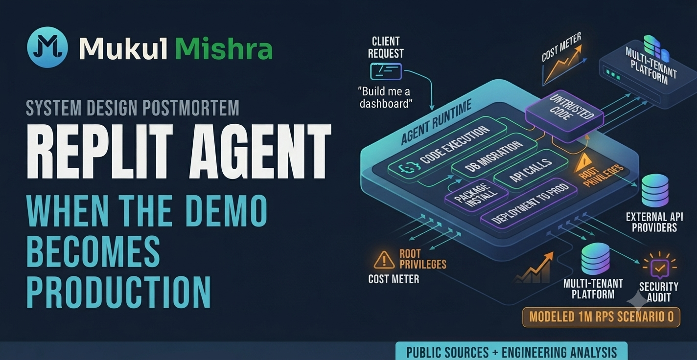
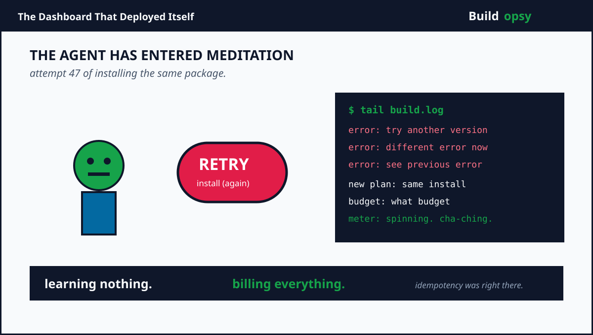
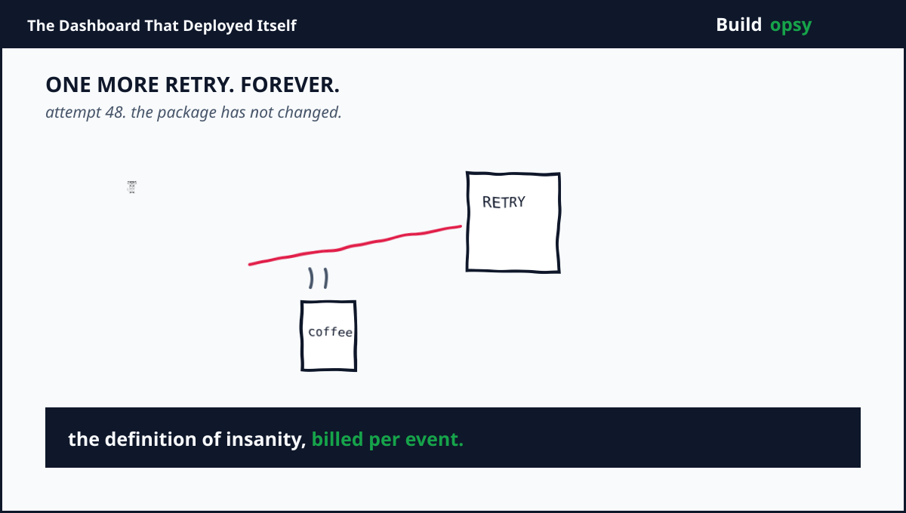

1. Replit Did Not Sell Code Generation
Code generation is the easy demo. The hard product is everything after the code appears. The application needs a runtime. The runtime needs dependencies. The database needs a schema. The secrets need protection. The deployment needs a URL. The logs need to explain why the agent confidently deleted the wrong table.
Replit's bet is that the development environment and the production path should live together. Users can describe an application in natural language, inspect the generated project, run it, collaborate on itand deploy it. The platform is not only an editor. It is a control plane for software creation and a compute plane for the software that creation produces.
In September 2025, Replit announced a $250M Series C at a $3B valuation. In March 2026, it announced another $400M round at a $9B valuation. The company said it had more than 40M users and users at 85 percent of the Fortune 500. The valuation is a market vote on a very specific idea: if software creation expands beyond professional engineers, the infrastructure must absorb a much wider range of behavior.
Wider behavior is polite language for unpredictable behavior. A professional engineer writes a migration and reviews it. An agent may write a migration, run it, fail, rewrite it, run it again, inspect the error, install a new packageand repeat until the budget or the database gives up.
2. The Agent Is a Distributed Workflow
Think of an agent run as a state machine, not a chat message. A user prompt creates a task. The planner asks a model what to do. A tool call reads files or invokes a shell. The result returns to the model. The model chooses another action. Tests run. A preview launches. A database changes. The task either reaches a verified state or stops in a half-built one.
Every loop has latency and cost. If one run takes 30 model turns, uses 20 tool calls, starts four sandbox processesand performs two deployment attempts, the user experienced one prompt. The platform experienced a small distributed job.
The system needs durable task state so a browser disconnect does not kill the work. It needs a queue so thousands of agent runs do not compete for one worker. It needs idempotency so a retry does not create two databases. It needs a policy engine because “run the install script” is not the same as “send an HTTP request.” It needs a sandbox that is isolated enough to run untrusted code but fast enough that users do not think the agent has entered meditation.
This is where the architecture quietly becomes a workflow engine. The model is one component. The scheduler, tool gateway, file system, process supervisor, network policy, secret broker, preview routerand deployment controller are the product.
3. The Sandbox Is the Product Boundary
A code agent needs to execute code to know whether its code works. Static text inspection is not enough. The agent must install packages, run tests, start servers, inspect outputand sometimes reproduce a bug. That execution environment is also where a malicious package, prompt injection, or accidental destructive command gets a chance to become real.
The sandbox therefore needs several boundaries. Process isolation stops one project from reading another project's files. Filesystem quotas stop generated assets from filling the host. Network egress policy limits where a project can call. CPU and memory quotas stop one runaway build from taking the neighborhood down. Short-lived credentials prevent a test process from becoming a permanent cloud identity.
There is a cost to every boundary. Stronger isolation often means more startup time. More startup time creates pressure to keep sandboxes warm. Warm sandboxes consume memory. More memory creates a larger bill. The optimization loop is circular, which is exactly why “just run it in a container” is not a production design.
My preferred shape is a two-tier runtime. Use lightweight microVM or hardened container sandboxes for ordinary build and test steps. Escalate risky operations, privileged dependenciesand production-like integrations into stronger isolation. Give every run a capability token with an explicit expiry. The agent should not inherit the user's entire cloud account because the prompt contained the words “set this up for me.”
4. The Traffic Model Is Not Just HTTP
Suppose Replit has 40M users and five percent are active on a busy day. That is 2M daily active users. Assume each active user opens or refreshes a workspace every 15 seconds during a 25-minute session. That is 200M interactive requests per day, or roughly 2,315 average RPS. A six-times burst creates about 14k RPS at the web edge.
That number is not the scary one. Agent runs create internal traffic. Assume 200k agent runs per day. Each run makes 30 model turns, 20 tool calls, 10 log eventsand two preview updates. That is 12.4M internal events per day before sandbox telemetry. Add 500k running projects that send health checks every 30 seconds and the platform receives another 1.44M checks per minute.
Now create a deliberately brutal benchmark. One million events per second enter the combined API, agent, runtimeand telemetry fabric. The point is not that Replit has publicly claimed this exact number. The point is to expose the difference between user-facing RPS and work-facing RPS. A single prompt can create dozens of internal eventsand those events have different durability and priority requirements.
| Workload | Modeled assumption | Result |
|---|---|---|
| Interactive traffic | 2M DAU, 25 min, 1 request/15 sec | 2.3k avg RPS |
| Peak web traffic | 6x burst | ~14k RPS |
| Agent runs | 200k/day, 62 internal events/run | 12.4M events/day |
| Project health checks | 500k projects, one/30 sec | 16.7k checks/sec |
| Stress benchmark | Combined event fabric | 1M events/sec |
5. The Current-Shaped Bill
Replit's private invoice is not public. Its public funding announcement says infrastructure capacity is a use of the capital. That is enough to ask a more useful question: what would a current-shaped prompt-to-production platform cost if it paid for each layer separately and kept too much capacity warm?
Use the 1M event-per-second benchmark. Assume the current-shaped design sends every event through an origin service. A blended rate of $0.0000018 per event represents compute, routing, queueing, telemetryand the share of capacity reserved for spikes. The arithmetic is 1,000,000 x 2,592,000 seconds x $0.0000018 = $4.67M per month.
Add sandbox memory and disk at $1.1M per month, model and tool calls at $1.4M, databases and object storage at $600kand support infrastructure at $500k. The current-shaped envelope reaches approximately $8.27M per month, or about $276k per day. This is a scenario, not a disclosure.
The bill is inflated by three kinds of waste. First, status events that do not need durability are treated like business events. Second, agent retries repeat tool work because the task state is not idempotent enough. Third, warm execution capacity is sized for the most dramatic hour instead of the real distribution of project activity.
6. The Proposed Shape at 1M RPS
My proposed design starts by classifying events before spending compute. Edge-cache safe reads. Batch telemetry. Coalesce repeated file updates. Route interactive tool calls through a priority queue. Keep a small warm pool for popular runtimes. Put cold projects on demand. Cache dependency layers and build artifacts by content hash. Make agent steps resumable and idempotent.
Assume those controls reduce origin events from 1M to 250k per second. Assume the better packed workload costs $0.0000009 per origin event. The core monthly work becomes 250,000 x 2,592,000 x $0.0000009 = $583,200.
Use $700k for sandbox capacity, $650k for model and tool calls after routing simple tasks to smaller models, $350k for storage and databasesand $400k for edge, observabilityand failover. The proposed envelope is approximately $2.68M per month, or about $89k per day.
| At 1M events/sec | Current-shaped design | Proposed design |
|---|---|---|
| Origin events | 1,000,000/s | 250,000/s |
| Core event work | $4.67M/month | $583k/month |
| Sandbox capacity | $1.1M/month | $700k/month |
| Model and tool calls | $1.4M/month | $650k/month |
| Storage and database | $600k/month | $350k/month |
| Edge and safety layer | $500k/month | $400k/month |
| Total | $8.27M/month | $2.68M/month |
| Difference | $5.59M/month, about 68% lower | |
7. Where the Design Can Still Fail
The agent can become a retry machine. A failed package install triggers a new plan. The new plan repeats the install. The package manager returns a different error. The agent tries another version. A task budget must include tool calls, wall-clock time, network egressand side effects, not only model tokens.
The preview can become production by accident. A user asks for a demo, then shares the URL with customers. The platform must make the deployment boundary visible. Preview secrets, production secrets, test dataand production data should never be interchangeable just because the agent can see all four.
The database can become the agent's scratchpad. Generated applications often use a database for everything because it is convenient. Replit should give projects sane defaults for connection pooling, migrations, backupsand idle suspension. A project with three users should not keep a large database fleet warm forever because its generated ORM opened a pool of 100 connections.
The model can be correct and the system can still be wrong. The agent may generate valid code that violates tenant policy, leaks a secret in a log, or creates an expensive polling loop. Verification must include behavior, security, resource usageand cost. Compile success is not a production readiness signal.

8. The Verdict
Replit's ambition is legitimate. It is also operationally brutal. The company is trying to compress ideation, implementation, execution, deploymentand collaboration into one surface. That creates a product with a low floor and a very high ceiling. It also creates a platform where every user can accidentally ask for a new distributed system.
The winning architecture cannot treat the agent as a chatbot. It has to treat the agent as an untrusted workflow engine with a budget, capabilities, checkpointsand an audit trail. Sandboxes contain code. Queues contain bursts. Content-addressed caches contain repeated work. Region-aware scheduling contains latency and transfer cost. A real deployment gate contains optimism.
At 1M events per second, the difference between the current-shaped design and the proposed shape is about $5.59M per month in this model. That difference comes from classification, reuse, batchingand refusing to make ephemeral work durable. The platform gets cheaper when it knows what not to remember.
That is the cliff edge for prompt-to-production software. The demo says anyone can build. Production asks who is allowed to run it, where it can connect, how long it may live, what it may changeand who pays when the agent gets curious.
The agent can write the application in seconds.  The agent can write the application in seconds. The infrastructure still has to survive the user's imagination.
Sources and Method
Replit's funding, valuation, user, enterprise adoptionand product claims come from company announcements and funding coverage. The architecture discussion is an engineering reconstruction based on the platform's public product description. The RPS and cost calculations are my own normalized scenario model, not Replit's confidential telemetry or bill.